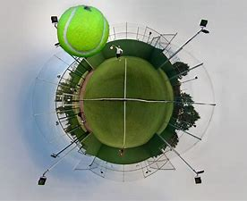
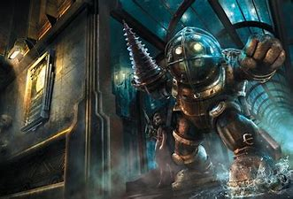

Esta es mi descripción como alumno. Soy una persona trabajadora, seria y amable a la vez.
Mis hobbies en forma de imagen son:
Y también:
Y uno de mis libros favoritos es: NeverWhere
Hay tantos, no podría elegir uno sin ofender al resto... el primero de la saga Bioshock, los Uncharted, Aunque ahora casi todo a lo que juego es a Mincraft y Lego "lo que sea" ya que son los que le gustan a mi hijo que es el que manda. :)
.